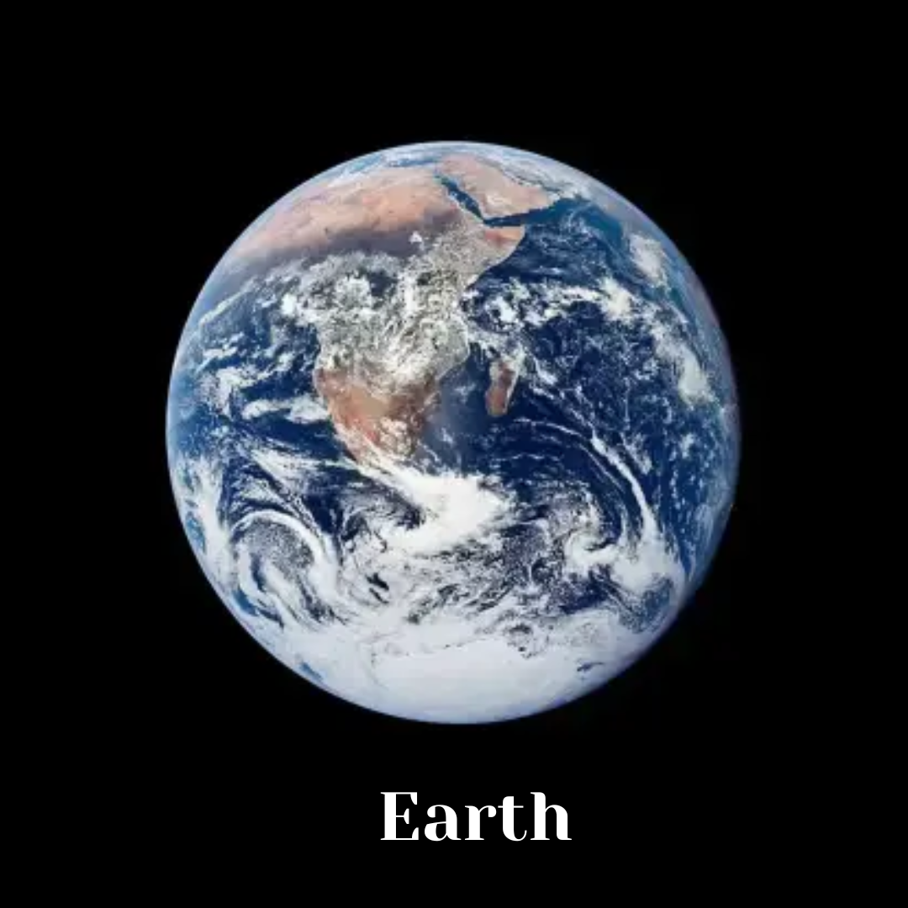

Colour
Mars appears red because of rusty dust on its surface.
BIG PLANETARIUM
Accessible space learning for everyone.
Mars appears red because of rusty dust on its surface.
Mars is much colder than Earth and can be extremely chilly.
Mars has two small moons called Phobos and Deimos.
It has rocks, valleys, volcanoes and wide dusty plains.
Mars is important because it is one of the closest planets to Earth and one of the easiest for scientists to study with robots and spacecraft.
It also helps researchers think about climate, water, geology and the future of space exploration.
Although Mars is not a comfortable place for humans, it continues to inspire new questions about life beyond Earth.

| Feature | Earth | Mars |
|---|---|---|
| Colour | Blue, green and white | Red and orange |
| Air | Breathable for humans | Very thin atmosphere |
| Water | Abundant liquid water | Mostly ice and traces |
| Life | Known to support life | No confirmed life today |
INTERACTIVE LEARNING
Go to the quiz page and answer questions about space.